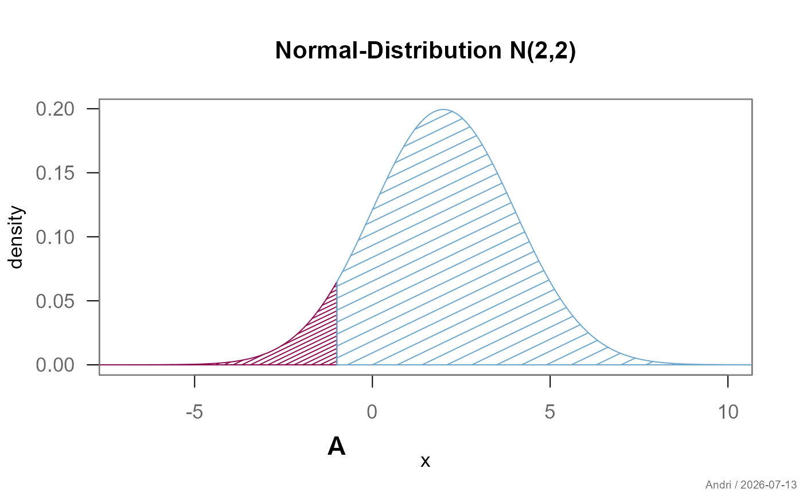
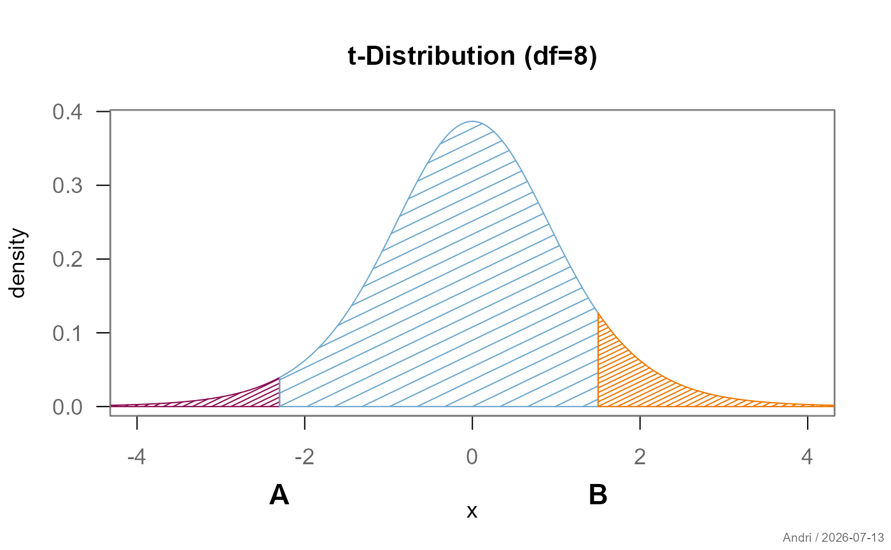
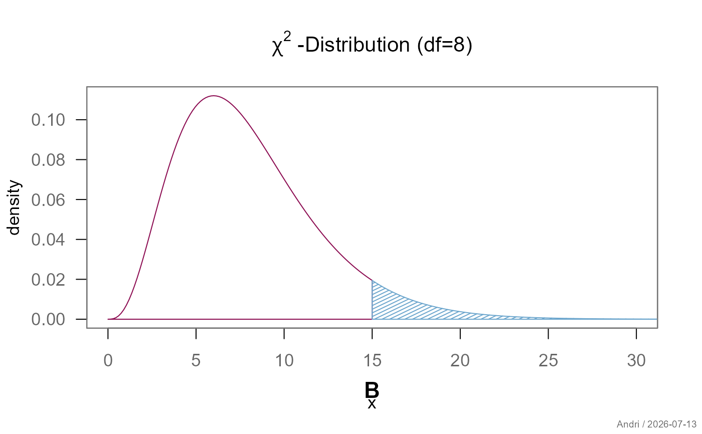

Produces a plot of a probability distribution function with shaded areas. Useful for illustrating critical regions, p-values, or probability masses in statistics teaching materials.
Usage
plotProbDist(
breaks,
FUN,
main = "",
xlim = NULL,
col = NULL,
density = 7,
ylab = "density",
areaLabels = NULL,
breakLabels = NULL,
grid = FALSE,
box = .useTheme,
...
)Arguments
- breaks
numeric vector of break points defining the boundaries between shaded areas. The first and last value define the plot range passed to
shade(); interior values are the actual boundaries.- FUN
the distribution density function to plot, typically of the form
function(x) dnorm(x, mean=0, sd=1).- main
main title for the plot.
NULLor""suppresses the title and reduces the top margin automatically.- xlim
numeric vector of length 2. x-axis limits passed to
curve().- col
color(s) for the shaded areas. Recycled if shorter than the number of areas. Defaults to the "helsana" palette.
- density
density of shading lines passed to
shade(). Default is7.- ylab
label for the y-axis. Default is
"density".- areaLabels
controls labels placed in the centre of each shaded area.
NULL(default) suppresses labels.TRUEusesLETTERSas default labels. A character vector sets explicit labels. A named list overrides individual arguments passed toboxedText()(e.g.list(cex = 3)orlist(x = c(-2, 3), y = 0.1)for manual positioning).- breakLabels
controls labels placed on the x-axis at interior break points via
mtext().NULL(default) suppresses labels.TRUEusesLETTERSas default labels. A character vector sets explicit labels. A named list overrides individual arguments (e.g.list(cex = 1.8, font = 1)).- grid
controls background grid.
FALSE(default) suppresses the grid.TRUEor.useThemedraws a grid according to the current theme. A named list overrides individual arguments passed togrid().- box
controls the plot box.
.useTheme(default) uses the current theme setting.TRUE/FALSEforces the box on or off. A named list overrides individual arguments passed tobox().- ...
further graphical parameters passed to
curve()and.applyParFromDots(), e.g.las,col.axis.
Examples
# Normal distribution with two areas
plotProbDist(breaks = c(-10, -1, 12),
FUN = function(x) dnorm(x, mean = 2, sd = 2),
main = "Normal-Distribution N(2,2)",
xlim = c(-7, 10),
col = c("deeppink4", "skyblue3"),
density = c(20, 7),
breakLabels = TRUE)

# t-distribution with three areas
plotProbDist(breaks = c(-6, -2.3, 1.5, 6),
FUN = function(x) dt(x, df = 8),
main = "t-Distribution (df=8)",
xlim = c(-4, 4),
col = c("deeppink4", "skyblue3", "darkorange2"),
density = c(20, 7),
areaLabels = FALSE,
breakLabels = list(text=c("A", "B")))

# Chi-square distribution
plotProbDist(breaks = c(0, 15, 35),
FUN = function(x) dchisq(x, df = 8),
main = expression(chi^2~"-Distribution (df=8)"),
xlim = c(0, 30),
col = c("deeppink4", "skyblue3"),
density = c(0, 20),
breakLabels = list(text="B"))
#> Warning: is.na() applied to non-(list or vector) of type 'expression'
